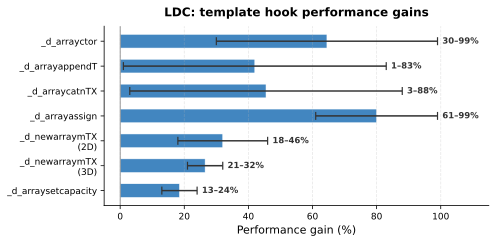
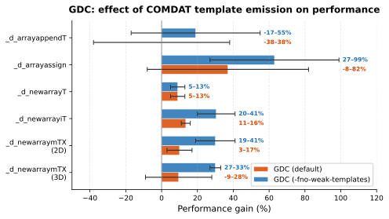

A Template-Based Approach to Runtime Libraries
Teodor-Ștefan Duțu, Albert Guiman, Răzvan-George Nițu, Constantin Eduard Stăniloiu
National University of Science and Technology Politehnica Bucharest
ICSOFT 2026
Your Code
↓
Runtime Library
↓
Operating System
Lion et al., USENIX ATC 2022
C/C++
level
performance
@safe
built-in
memory safety
T!()
first-class
templates
Three compilers, one shared frontend
// What you write:
a ~= b;
// What the compiler generates:
_d_arrayappendT(typeid(typeof(a)), cast(byte[])a, cast(byte[])b);The compiler lowers high-level expressions into runtime library calls
Array ops, casting, allocation, comparison, ...
TypeInfo Bottleneckextern(C) linkage + separate static library
byte[] / void[], requiring unsafe casts
Hooks predate D's template system - designed without generics
+ only instantiated hooks are linked - smaller binaries
performance gain
with DMD only
+ Methodology established
+ Subset of hooks converted
- Only DMD (slow backend)
- Not all 32 hooks
- No engineering challenges documented
32
Complete6+
Challenges2
Compilersa ~= b
.lowering = _d_arrayappendT(a,b)
emit call to template
+ Original expression preserved for error reporting and CTFE
+ All compilers benefit (shared frontend)
extern (C) void[] _d_arrayappendT(
const TypeInfo ti, ref byte[] x, byte[] y)
{
auto tinext = unqualify(ti.next);
auto sizeelem = tinext.tsize; // runtime lookup!
_d_arrayappendcTX(ti, x, y.length);
memcpy(x.ptr + length * sizeelem,
y.ptr,
y.length * sizeelem);
__doPostblit(x.ptr + length * sizeelem,
y.length * sizeelem, tinext);
return x;
}ref Tarr _d_arrayappendT(Tarr : T[], T)
(return ref scope Tarr x, scope Tarr y) @trusted
{
auto length = x.length;
_d_arrayappendcTX(x, y.length);
static if (__traits(hasCopyConstructor, T)) {
size_t i;
try {
for (i = 0; i < y.length; ++i)
copyEmplace(y[i], x[length + i]);
}
catch (Exception o) { /* destroy in reverse */ throw o; }
} else {
if (y.length) {
memcpy(&x[length], &y[0], y.length * T.sizeof);
static if (__traits(hasPostblit, T))
try __doPostblit(x[length .. $], i);
catch (Exception o) { /* destroy in reverse */ throw o; }
}
}
return x;
}Applied independently to each of the 32 hooks
32 old TypeInfo hooks → 16 template hooks via metaprogramming
| Functionality | Old Hooks (32) | Template Hook |
|---|---|---|
| Set array length | _d_arraysetlengthT, _d_arraysetlengthiT |
_d_arraysetlengthT |
| Append arrays | _d_arrayappendT |
_d_arrayappendT |
| Append elements | _d_arrayappendcTX |
_d_arrayappendcTX |
| Construct arrays | _d_arrayctor, _d_arraysetctor |
_d_arrayctor |
| Assign arrays | _d_arrayassign, _d_arrayassign_l, _d_arrayassign_r |
_d_arrayassign |
| Concatenate arrays | _d_arraycatT, _d_arraycatnTX |
_d_arraycatnTX |
| Array literals | _d_arrayliteralTX |
_d_arrayliteralTX |
| (Re)allocate arrays | _d_arraysetcapacity, _d_arrayshrinkfit |
_d_arraysetcapacity, _d_arrayshrinkfit |
| Compare arrays | _adEq2 |
_equals |
| Create class object | _d_newclass |
_d_newclass |
| Create struct object | _d_newitemU, _d_newitemT, _d_newitemiT |
_d_newitemT |
| Create arrays | _d_newarrayU, _d_newarrayiT, _d_newarrayT |
_d_newarrayT |
| Create N-D arrays | _d_newarraymiTX, _d_newarraymTX, _d_newarrayOpT |
_d_newarraymTX |
| Create exception | _d_newThrowable |
_d_newThrowable |
| Destroy struct | _d_delstruct |
_d_delstruct |
| Class casts | _d_dynamic_cast, _d_interface_cast, _d_class_cast, _d_paint_cast, _d_isbaseof2 |
_d_cast |
The methodology is simple.
The real-world migration is not.
Why runtime casts?
Class hierarchies are polymorphic — the actual type of an object is only known at runtime (via vtable / ClassInfo)
↓
_d_cast selects cast kind via Design by Introspection
Issue: alias this
alias this allows a struct to implicitly convert to one of its members:
struct Reb(T, U) {
T original;
U stripped;
alias original this;
}
// Reb!(const(A), A) was passed
// instead of the expected const(A)expressionsem.d
-preview=dip1000: experimental flag enabling scope and return-ref checking - allows stack allocation of certain arrays
-preview=dip1000dip1000memcpy for trivially-copyable types
1M
iterations per hook
100
runs averaged
i5-12400
8GB RAM, single-threaded
Focus on LDC (LLVM) and GDC (GCC): production compilers
DMD's backend does not optimize aggressively - not representative

Bars show midpoint of gain range; error bars indicate min-max across test configurations
regression with defaults
-fno-weak-templates - emit to COMDAT sections - inlining enabled

COMDAT brings GDC results in line with LDC
max perf gain
compilation time increase
binary size increase
Some hooks actually reduce compilation time
(removal of old TypeInfo code paths)
| Hook | Perf. Gain | Lib Size change druntime / phobos |
Comp. Time change |
|---|---|---|---|
_d_arrayctor |
30-99% | +3.5% / -2.4% | -2% |
_d_arrayappendT |
1-83% | +2.2% / +2.5% | +0.4% |
_d_arraycatnTX |
3-88% | +2% / -5.5% | -10.7% |
_d_arrayassign |
61-99% | -0.5% / -4% | -2.6% |
_d_newarraymTX |
18-46% | +1% / -5.8% | -10% |
_d_arraysetcapacity |
13-24% | -0.8% / +1.2% | +0.5% |
Any language with:
Complementary: polymorphisation (Wood, 2020), function merging (Stirling et al., 2022)
hooks converted
max speedup
+ Replace runtime reflection with compile-time generics
+ Minimal overhead: under 5% comp, under 15% size
+ Production-ready in LDC and GDC
+ Applicable to C++, Rust, Go
+ Modular, pay-as-you-go runtime